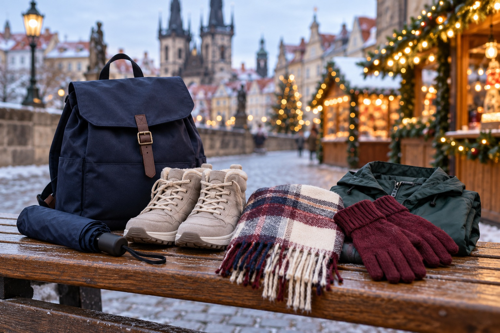

VIAJES · GUÍA
⌂
ALOJAMIENTO
Qué revisar al comparar alojamientos
Ubicación, condiciones de reserva y necesidades del viaje: una lista para empezar.
Leer la guía ↗✳ GUÍAS DE VIAJE · EQUIPAJE ÚTIL · IDEAS PARA ELEGIR MEJOR
Itinerarios claros y productos útiles para cada tipo de viaje, con información para planificar con más confianza.
 Golf en Portugal ↗
Golf en Portugal ↗
Qué llevar de viaje ↗Imágenes ilustrativas · guías editorialesTRES TEMAS, UN MISMO CRITERIO
Siete guías publicadas de viajes y equipaje. Seguimos ampliando el contenido y verificando cualquier información antes de recomendar opciones.
Una checklist para comparar ubicación, coste total y condiciones antes de reservar.
Explorar viajes →V02 · DEPORTECriterios para elegir material de carrera por uso, comodidad y presupuesto.
Explorar deporte →D03 · PRODUCTOS VARIOSUn método sencillo para comparar productos cotidianos antes de comprar.
Ver ideas →UGUÍAS Y SELECCIONES
Lecturas prácticas para tomar decisiones informadas. No contienen productos probados ni enlaces comerciales.
Ubicación, condiciones de reserva y necesidades del viaje: una lista para empezar.
Leer la guía ↗Define uso, ajuste y características antes de comparar opciones.
Leer la guía ↗Selecciones por necesidad, con información y disponibilidad por verificar.
Leer la guía ↗LECTURAS PRÁCTICAS
Guías publicadas para viajes y equipaje. No incluimos enlaces de afiliación activos.
Compara ubicación, coste total, condiciones y necesidades reales del viaje.
Criterios generales según uso, comodidad y presupuesto.
Una checklist para revisar necesidad, compatibilidad, coste y condiciones.
Plan orientativo con dos rondas, tiempos de viaje y comprobaciones antes de reservar.
Itinerario flexible con fechas oficiales 2026 y enlace de tren para comprobar horarios.

Funda de viaje, equipaje de golf y criterios para comparar accesorios.
Capas, calzado y accesorios para caminar por Estrasburgo y Colmar.
NUESTRO MÉTODO
Explicamos qué conviene comparar, para quién puede ser útil cada opción y qué detalles hay que verificar antes de decidir.
Ver las guías →UNA COMPRA O UN VIAJE MEJOR INFORMADO
Estamos construyendo una biblioteca de guías útiles para elegir con más criterio.